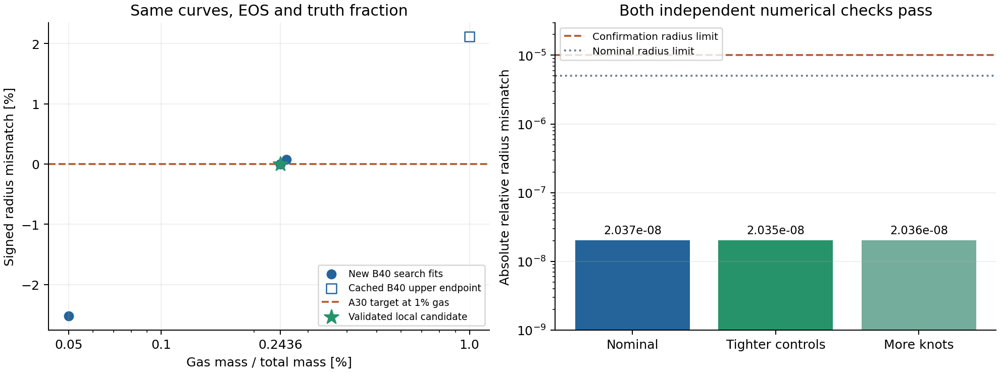

同一A30/B40曲线、5地球质量、0.1bar/300K与理想mu2密度EOS；A为合成真值，B为恢复曲线。候选半径误差2.0373e-8，两次独立复算均通过。实际变号区间为[0.243038549%,0.243603878%]，不是置信区间。

| case | gas / % | radius residual | fit residual |
|---|---|---|---|
| search-01-lower | 0.050000000 | -2.524e-02 | 5.468e-08 |
| search-02 | 0.254982485 | 7.384e-04 | 4.430e-08 |
| search-03 | 0.243038549 | -3.758e-05 | 4.733e-08 |
| search-04 | 0.243603878 | 2.037e-08 | 4.695e-08 |
| confirm-tight | 0.243603878 | 2.035e-08 | 1.511e-08 |
| confirm-refined | 0.243603878 | 2.036e-08 | 4.661e-08 |